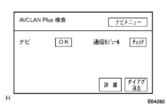

Diagnostic screen transition is "Multi AV Station System"-"Diagnowship System"reference
How to launch diagnostic (guidelines)reference)
How to release the diagnostic (guidelines)reference)
AVC-LAN PLUS inspection (car with Telematic Star Runba)

□ Participation □
Inspection guidelinesreference
The AVC-Lan Plus test shows the results of the test on the screen based on the response of each device to the "Diag ON instruction command" emitted by the navigation computer.
Each screen of the AVC-Lan Plus test is drawn by the navigation computer.
DMC inspection (car with Telemetici Castle Seavor)
□ Participation □
Inspection guidelinesreference
The DMC test screen is drawn by the navigation computer.
 reference
reference